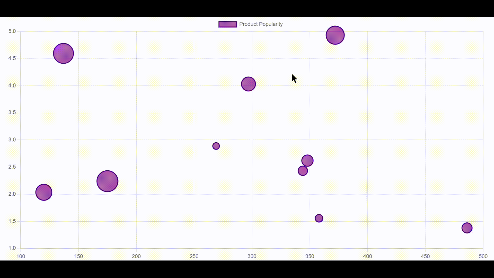
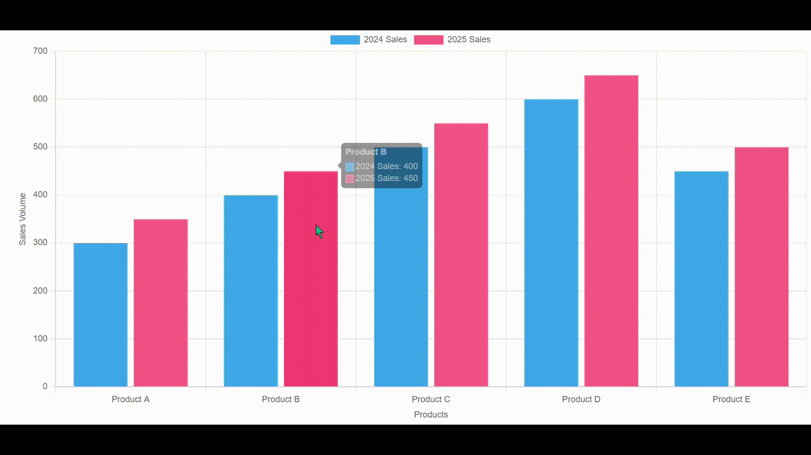
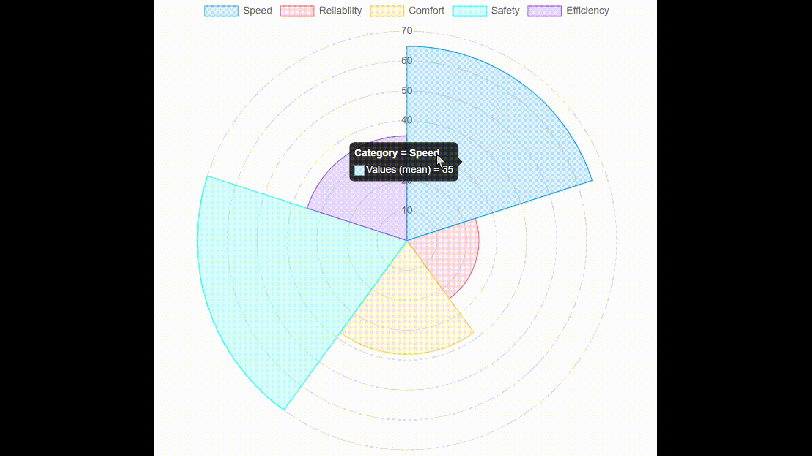

pip install ipychartInteractive Data Visualization with Ipychart: A Python Chart.js Bridge
\[Introduction\]
We are a team of three members: Kavya Patel, Krish Patil, and Nachiket Patil. In this article, we will explore the Ipychart library, which is used explicitly for Python in Jupyter Notebook. Ipychart is a Python library that leverages the power of Chart.js to enable the creation of fully interactive, customizable, and modular charts directly within Jupyter Notebooks. It allows seamless chart creation using Python syntax, supports integration with pandas data frames for quick visualization, and offers features like dynamic tooltips, zooming, and predefined color schemes. Particularly useful for data scientists and analysts, Ipychart simplifies data visualization by enabling the creation of visually appealing, interactive charts without leaving the Jupyter Notebook environment, streamlining exploratory data analysis and presentation.
\[Installation~and~Setup\]
In this section, we will guide you through the installation and setup of Chart.js in the form of Ipychart on your system for use in Jupyter Notebook. You will learn how to install the ipychart library, verify the installation, and enable it in Jupyter. Once set up, you can easily create interactive charts using Ipychart in your notebooks.
Installation
Install the ipychart Library .
Since ipychart is a Python library, we need to install it using pip. Open the command prompt and run:
Setup
To use Chart.js in the form of Ipychart in your Jupyter Notebook, import the following library:
from ipychart import ChartNow, you are ready to use Ipychart in your Jupyter Notebook!
\[Key~Features~and~Explanation\]
Ipychart offers a range of powerful features that make it an excellent tool for interactive data visualization in Jupyter Notebooks:
Integration with Chart.js:
It brings the capabilities of Chart.js to Python, supporting a wide variety of chart types such as line, bar, pie, doughnut, radar, and scatter charts, among others.
Pandas Interface:
Ipychart allows seamless chart creation directly from pandas dataframes, making it easy to visualize data without extensive preprocessing.
High Customizability:
Users can configure legends, titles, tooltips, scales, layouts, and animations through Python dictionaries. Advanced customization is also possible using JavaScript callback functions.
Interactive Features:
Charts include dynamic tooltips, clickable legends, and zoom functionality for enhanced interactivity. Zooming can be reset with a double click.
Predefined Color Schemes:
It supports automatic color schemes inspired by tools like Tableau and ColorBrewer for visually appealing charts.
Export Capability:
Charts can be exported as PNG or JPG images using the to_image() method.
Responsive Design:
Charts adapt to different screen sizes for optimal display across devices.
These features make Ipychart a versatile and user-friendly library for creating engaging visualizations directly within Jupyter Notebook environments.
\[Code~Examples\]
Example 1
We imported Chart from the ipychart library and random to generate random values. A seed was set for consistency, and the data dictionary was created with a dataset labeled “Product Popularity.” Each data point has a random x value, a y value between 1 and 5, and a radius (r) based on another random value. The bubbles are styled with a purple fill and an indigo border. Using the Chart function, we created a bubble chart, with a legend positioned at the top. Finally, display(bubble_chart) renders the chart, visually representing product popularity.
from ipychart import Chart
import random
random.seed(0)
data = {
"datasets": [{
"label": "Product Popularity",
"data": [{"x": random.randint(100, 500), "y": random.uniform(1, 5), "r": random.randint(100, 500) / 20} for _ in range(10)],
"backgroundColor": "rgba(128, 0, 128, 0.6)",
"borderColor": "rgba(75, 0, 130, 1)",
"borderWidth": 2
}]
}
bubble_chart = Chart(
data=data,
kind="bubble",
options={
"plugins": {
"legend": {"position": "top"}
}
}
)
display(bubble_chart)Output:

Example 2
We imported Chart from the ipychart library to create an interactive bar chart. The data dictionary defines product labels and sales data for 2024 and 2025, each represented with a unique color. Using the Chart function, we generated a bar graph to compare sales performance across different products. The tooltip plugin allows users to see details when hovering over bars, while the legend at the top helps differentiate the datasets. Finally, display(chart) renders the chart, making it easy to visualize and analyze sales trends.
from ipychart import Chart
data = {
"labels": ["Product A", "Product B", "Product C", "Product D", "Product E"],
"datasets": [
{"label": "2024 Sales", "data": [300, 400, 500, 600, 450], "backgroundColor": "#36A2EB"},
{"label": "2025 Sales", "data": [350, 450, 550, 650, 500], "backgroundColor": "#FF6384"}
]
}
chart = Chart(
data=data,
kind="bar",
options={
"plugins": {
"tooltip": {"enabled": True, "mode": "index"},
"legend": {"display": True, "position": "top"}
},
"scales": {
"x": {"title": {"display": True, "text": "Products"}},
"y": {"title": {"display": True, "text": "Sales Volume"}}
}
}
)
display(chart)Output:

Example 3
We imported pandas to manage data and polarplot from ipychart to create a polar chart. A DataFrame was created with categories like Speed, Reliability, Comfort, Safety, and Efficiency, each assigned a numerical value. Using the polarplot function, we mapped categories to the axes and plotted their corresponding values in a circular format. This visualization helps compare different attributes in a structured manner. Finally, display(chart) renders the polar chart, making it easy to analyze category-wise performance.
import pandas as pd
from ipychart import polarplot
data = pd.DataFrame({
"Category": ["Speed", "Reliability", "Comfort", "Safety", "Efficiency"],
"Values": [35, 38, 65, 70, 24]
})
chart = polarplot(
data=data,
x="Category",
y="Values"
)
display(chart)Output:

Example 4
We imported pandas to handle data and Chart from ipychart to create a pie chart. A DataFrame was created with smartphone companies and their respective market shares. The data dictionary extracts company names as labels and their market shares as values, assigning unique colors to each segment. Using the Chart function, we generated a pie chart to visualize market distribution. The tooltip plugin enables hover details, while the legend on the right helps identify each company. Finally, display(pie_chart) renders the chart, providing a clear visual representation of market share distribution.
import pandas as pd
from ipychart import Chart
df = pd.DataFrame({
"Company": ["Apple", "Samsung", "Huawei", "Xiaomi", "Oppo", "Vivo"],
"Market_Share": [30, 25, 15, 12, 10, 8]
})
data = {
"labels": df["Company"].tolist(),
"datasets": [{
"label": "Market Share",
"data": df["Market_Share"].tolist(),
"backgroundColor": ["#3498db", "#e74c3c", "#f1c40f", "#2ecc71", "#9b59b6", "#e67e22"],
"borderColor": "#fff",
"borderWidth": 2
}]
}
pie_chart = Chart(
data=data,
kind="pie",
options={
"plugins": {
"tooltip": {"enabled": True, "mode": "index"},
"legend": {"display": True, "position": "right"}
},
"layout": {
"padding": 50
}
}
)
display(pie_chart)Output:
\[Practical~Use~Cases\]
Ipychart makes it easy to create interactive and visually appealing charts inside Jupyter Notebooks. Here’s where it can be super useful in real life:
Exploring Data Easily:
Instead of staring at raw numbers, you can turn them into clear, interactive charts to spot trends and patterns.
Making Business Reports More Engaging:
If you’re tracking sales, profits, or customer growth, charts can bring your data to life and make it easier to understand.
Tracking Machine Learning Models:
Whether you’re training a model or testing its accuracy, visualizing metrics helps you see what’s working and what’s not.
Building Live Dashboards:
Keep an eye on stock prices, website traffic, or sensor data with real-time updates inside your notebook.
Presenting Survey Results:
Instead of reading through boring spreadsheets, you can turn responses into colorful pie charts or bar graphs.
Comparing Products or Performance:
Want to see how different phone brands stack up? A radar or polar chart can make comparisons easy to understand.
Helping with Research & Learning:
If you’re a student or researcher, interactive charts make complex data much more accessible and fun to analyze.
\[Conclusion\]
As a team, Ipychart is a powerful and user-friendly Python library that simplifies the creation of interactive and customizable charts within Jupyter Notebooks. By leveraging the robust capabilities of Chart.js, it seamlessly integrates with pandas, offers dynamic interactivity, and provides predefined color schemes—making it an excellent choice for data scientists, analysts, and educators. Whether you’re conducting exploratory data analysis, creating engaging presentations, or teaching visualization concepts, Ipychart streamlines the process and enhances data storytelling. Its flexibility and ease of use make it a valuable tool for anyone working with data visualization in a notebook environment.
\[Reference~and~further~Readings:\]
For more advanced features and in-depth usage of Ipychart, refer to the official user guide: Ipychart Advanced Guide – Callback Functions . This guide covers interactive functionalities, event handling, and advanced customization options, helping you make the most out of Ipychart in Jupyter Notebooks.